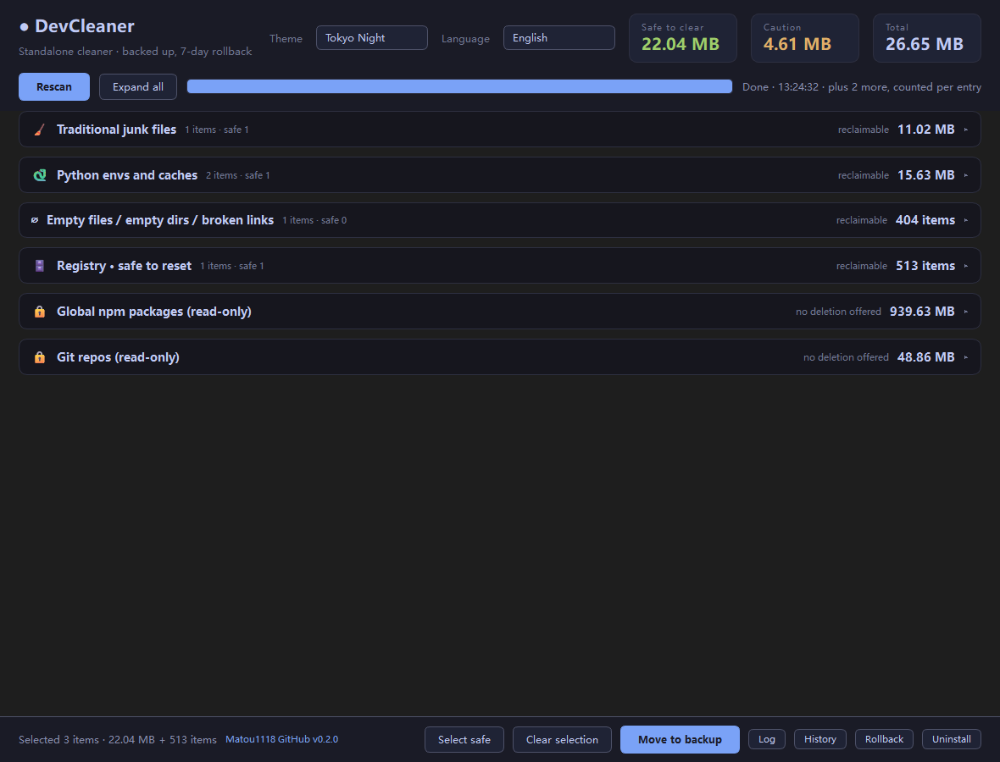

A standalone cleaner that shows its work. Ten evidence-based scanners, every file to the Recycle Bin, registry backed up before it's touched — and a reason printed next to every single item.

Every item carries the signal that flagged it — the running process, the uninstall entry, the remote URL. If it can't prove a file is dead, it leaves it alone.
An installer is only offered when the product name resolves and a matching process, install directory, or uninstall registry entry says it's already installed. One loose signal isn't enough.
Files move to a local backup directory you can roll back in one click for 7 days; expired backups are purged at startup. Nothing is hard-deleted.
Registry keys are exported to a .reg file before deletion. If the
export fails, the deletion is refused — never a silent edit.
Reads the installed-software list, runs the vendor's own uninstaller, then auto-scans for leftovers (registry keys, install directory, AppData, shortcuts) to clear in one click.
A Git clone with a remote never enters the deletable list. Only local clones
with no remote are ever considered.
Stale temp files need a minimum age. Anything held open by a running process is skipped and reported, not forced.
Chinese and English, switchable in the top-right. Six colour themes, WCAG AA contrast checked. Fully offline — no network calls, ever.
Counted per entry where bytes are meaningless — the registry and empty-file scanners show item counts, not fake gigabytes.
A cleaner is only useful if you trust it on a machine you care about.
.reg first; if the export fails the delete is refused.
Restore with reg import.C:\Windows, Program Files or system
temp roots.Switch in the top-right; the choice is written straight back to
settings.yaml and survives a restart.
One exe, no install, no dependencies. Read the reasons it gives, then decide.
Licence: CC BY-NC 4.0 — free to modify and remix, attribution to Matou1118 required, non-commercial only. Full terms